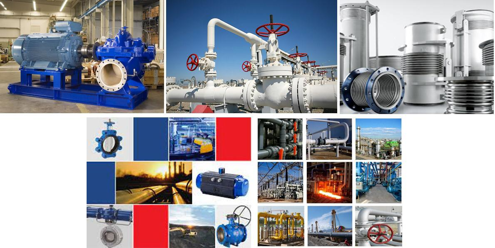

Pumps
Valves & Actuators
Piping solutions (SS, CS & GRP)
Fittings
Gauges
Expansion Joints
Steam Traps
Consumables

R.E Reverse engineering makes it possible to quickly manufacture spare parts for pumps, valves and other rotating equipment that are hard to find or no longer available.
we provide our customers with detailed technical information, competitive prices, and fast and safe delivery of their products. We have skilful and experienced engineers who can provide diagnosis and technical assistance for new and existing machinery including turbines, compressors, fans, blowers, boilers, pumps, pressure vessels, reactors, heat exchangers, heaters, dryers, purifiers, evaporators, instrumentation, agitators, valves, actuators, and burners.